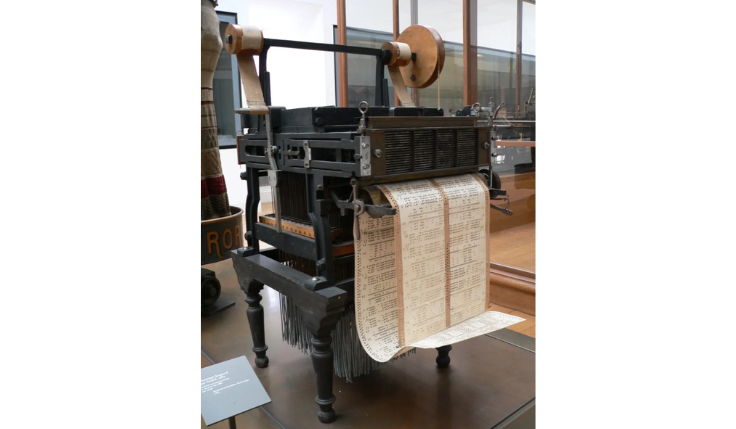

O mecânico e inventor francês, Joseph Marie Jacquard, desenvolve um equipamento semelhante a um tear, que utiliza cartões de madeira perfurados para tecer desenhos em tecidos.

1822
O matemático inglês Charles Babbage inventou uma máquina movida a vapor inovadora, que teoricamente, seria capaz de calcular tabelas de números. Apesar de ter tido apoio do governo para construí-la, a calculadora só foi construída e testada em 1991, pelo Science Museum de Londres.